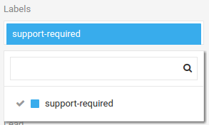

Tickets¶
The ticket system is a fully featured ticket desk which enables handling of all communication with your clients and internal operations. Featuring assignment, labelling, external integrations, tasks and much more.
Using the navigation bar takes you to the tickets dashboard which by default is set to display your current list of tickets with no filter applied.
Tip
When searching, press shift + enter to search through ALL tickets (bypassing any active filters).
The basic workflow is as follows:
- Creation
- Assignment
- Labelling
- Task Creation
- Time Allocation
- Viewing Tickets
- Replying to Tickets
- Replying with a Private Note
- Completing a Task in Ticket view
- Closing a Ticket
Create a new Ticket¶
From the ticket dashboard, click on New Ticket
You will be taken to the new ticket page. Enter relevant details Title, Description, Type and toggle whether it is a Private Note.
At this stage you can also use the left hand options bar to change the ticket status (open by default), ticket assignee, department and project. You can also set the default time status and give the ticket a follow-up-date if required. You can also apply custom labels. For more detailed information on each of these settings search for their respective sections in this documentation.
Once created your ticket should look like the above example (note by default the ticket status is set to open)
Ticket Assignment¶
Once your ticket exists you can make various assignments in order to categorise it within your system. Please note this system is highly configurable and may be different for your organisation but the principle and process of assignment remains the same.
On the left hand option bar, we will assign the ticket to ourselves (in this case the user is called 'Zebreco Support'). Confirmation of the change will be displayed by a small green tick next to the title.
We can continue to make assignments of department, project and lead (if applicable).
Ticket Labelling¶
Tickets can have any number of custom labels applied to them. The nature and use of these labels will be defined by your organisation but the principle is universal. Labels are used to categorise tickets and give specific information such as priority or status.

In this example we apply a label 'support-required' to the new ticket.
Task Creation¶
On the right hand navigation bar you will find a section named 'Tasks'. This is where you can add new tasks or task tracks to your ticket. We will not be going into detail about task creation here. For more information on tasks Go Here.
For this example we will create a simple example task requiring support to reply to the ticket.
Time Allocation¶
On the right hand navigation bar you will find a section named 'Time'. This is where you can set the tickets time status (whether work on the ticket is chargeable or under a payment plan for example) and allocate time spent working on it. For this example we will add a simple 10 minutes of work and make it chargeable.
Viewing Tickets¶
Clicking back on the 'Tickets' tab will take us to the Tickets overview. You will now see our newly created ticket. (If you cannot see the ticket ensure the filter is set to 'No Filter').
If you click on the ticket you will see the complete ticket view with all the assignments we have made above.

If you have lots of tickets you can filter them by a number of categories you may have applied such as whether the ticket is open or closed, tickets assigned to you or unassigned tickets. Simply select the required filter from the drop down menu or use the quick filter from the navigation bar.
Replying to Tickets¶
When you are ready to reply to a ticket, simply click on Reply
This brings up the reply dialog where you can input your communication and choose the required reply type.

There are three options for replying, they act slightly differently and are as follows:
- Reply & Keep Open - This will reply to the ticket and keep the ticket status on 'open', this may be useful if follow up tasks/communication will be carried out.
- Reply & Close - This will close the ticket after replying. This is useful when a problem has been solved or answered inthe reply and will require no further input.
- Reply - This will also keep the ticket status open but apply an 'Awaiting Reply' status which helps to further categorise the ticket as an ongoing issue. This is the default reply status and is most widely used during ticket progression.
Note: at this stage you will be asked to log any time for the ticket that is relevant (for example if the ticket is set to chargeable under time status). This is done via the standard edit box which should pop-up.
To complete the reply, click on the Save icon.
Replying With a Private Note¶
To make the reply private (only viewable from within your organisation) simply check the box 'Private Note'. This will change the options to:
- Add Note & Close - Add the private note and set the ticket status to 'closed'.
- Add Note - Add the private note and leave the ticket status unchanged.
The private note will display with a yellow background to signify its privacy. This note will only be viewable to those members within your organisation.
Completing a Task in Ticket View¶
From the ticket view you can view all associated tasks on the right hand tab. Here you can see the task we created earlier 'Reply to ticket'. Completing a task is as simple as checking the tick box next to the relevant task, This will mark the adjacent task as complete.
Closing a Ticket¶
To close a ticket, either use the drop down menu on the left under Status or click on Close from within the ticket view.
Back to Top
Back to Documentation Menu